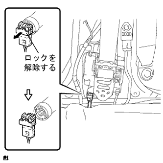
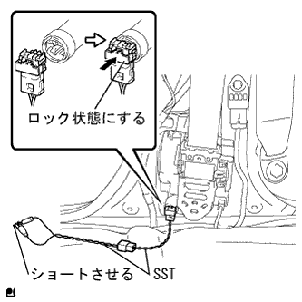
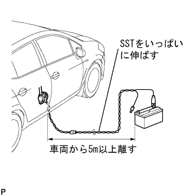
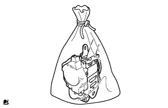
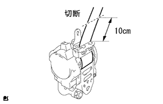
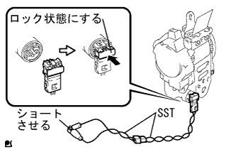
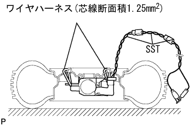
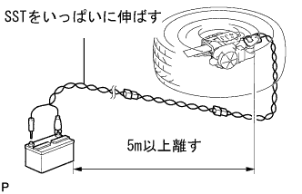
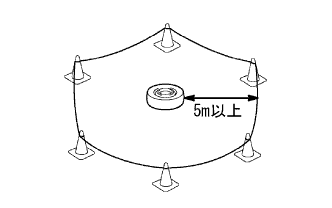

Front Seat Outer Belt Assembly RH Disposal |
| 1. Dispose of Front Seat Outer Belt Assembly RH (When Scrapping Vehicle) |
 |
Pretensioner Disposal Procedure
Using a thin-bladed screwdriver with its tip wrapped in protective tape, pull out the locking button toward you, release the lock and disconnect the connector.
 |
Connect the following 2 SSTs.
Short the alligator clip and terminal of the SST.
Connect the SST to the pretensioner and lock the locking button.
 |
Extend the SST fully from the vehicle and place the battery 5m or more away from the vehicle.
Check that the vehicle interior and surrounding area are safe, and connect the SST alligator clip to the negative battery terminal.
Touch the SST terminal to the positive battery terminal to activate the pretensioner.
 |
Pretensioner Disposal Procedure
Place the activated pretensioner in a strong, transparent plastic bag, seal it and dispose of it.
| 2. Dispose of Front Seat Outer Belt Assembly RH (Removed Unit) |
 |
Pretensioner Activation and Disposal Procedure
Retract the seat belt into the retractor.
With the seat belt fully retracted, cut the seat belt at a position 10cm from the retractor.
 |
Connect the following 2 SSTs.
Short the alligator clip and terminal of the SST.
Connect the SST to the pretensioner and lock the locking button.
 |
Using a wire harness (conductor cross-sectional area 1.25mm2or more), secure the pretensioner to a tire with wheel (tire width approximately 185mm) with the pretensioner connector facing up.
Pass the SST over the top of the tire.
 |
Extend the SST fully from the tire with wheel, and place the battery 5m or more away.
Check that the surrounding area is safe, and connect the SST alligator clip to the negative battery terminal.
 |
Use pylons and rope, etc. to enclose the area so that no one enters within a radius of 5m from the outside of the tire.
Touch the SST terminal to the positive battery terminal to activate the pretensioner.
Pretensioner Disposal Procedure
Place the activated pretensioner in a strong, transparent plastic bag, seal it and dispose of it.